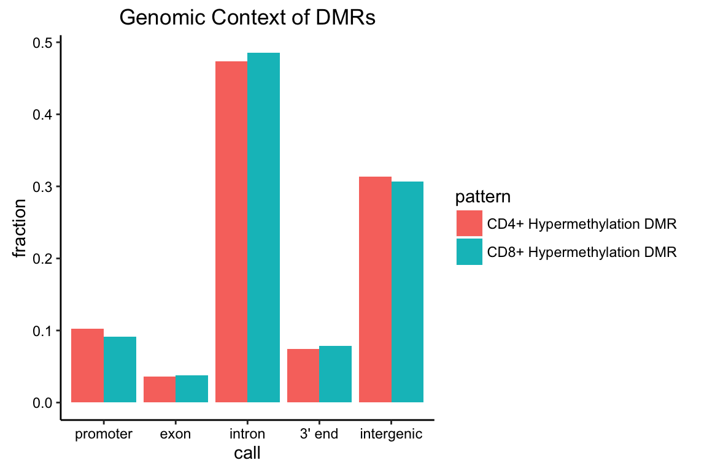

This how-to will demonstrate the use of Goldmine to analyze a set of example genomic ranges in order to introduce you to the main functions of the package. These ranges can be substituted for any ranges of interest. Please refer to the function documentation for advanced options.
First, start R and install pre-requisite packages from Bioconductor:
source("http://bioconductor.org/biocLite.R")
biocLite(c("GenomicRanges","IRanges","devtools"))Then, install Goldmine from GitHub. Be sure to accept installation of any additional pre-requisite packages from CRAN.
library(devtools)
install_github("jeffbhasin/goldmine")This example will demonstrate how to save detailed gene model and feature annotations for any set of query ranges using Goldmine. Summarization and plotting of context proportions across the range set is also demonstrated. A list of variable-size genomic ranges representing regions with changes in DNA methylation is used as an example. This query range set can be interchanged for any set of interest.
After Goldmine is installed, it must be loaded before the functions will be available to a session of R:
library(goldmine)The goldmine package contains an example set of genomic ranges. These ranges are a pre-filtered set of differentially methylated regions (DMRs) detected between CD4+ and CD8+ T-cells that were detected using Methylaction on MeDIP-seq data produced by the Epigenome Roadmap Constortium.
To load the example genomic ranges from a CSV file:
csvpath <- system.file("extdata", "dmrs.csv", package = "goldmine")
query <- read.csv(csvpath)If you are providing your own set of ranges, be sure the data contains the columns “chr”, “start”, and “end” which represent chromosome name, start coordinate (1-based), and end coordinate, respectively.
head(query)## chr start end width anodev.padj pattern
## 1 chr1 2455051 2455750 700 8.009212e-03 CD4+ Hypermethylation DMR
## 2 chr1 4375751 4376100 350 8.495559e-03 CD4+ Hypermethylation DMR
## 3 chr1 5449301 5449650 350 1.570646e-09 CD4+ Hypermethylation DMR
## 4 chr1 8973301 8973900 600 9.617668e-03 CD4+ Hypermethylation DMR
## 5 chr1 8982951 8985500 2550 2.493749e-10 CD4+ Hypermethylation DMR
## 6 chr1 8985851 8986850 1000 6.689607e-05 CD4+ Hypermethylation DMR
## Cd8Naive_over_Cd4Naive.log2fc dmrid
## 1 -1.1979293 41
## 2 -1.2370330 65
## 3 -2.2370278 95
## 4 -0.6765281 166
## 5 -1.2452204 169
## 6 -1.9854875 170Both summary (“wide” format) and detailed (“long” format) annotations are produced by the goldmine() function. The data source for the gene and feature sets is the table archive of the UCSC Genome Browser. The first time a table is needed, Goldmine will download and cache the table. On subsequent calls to goldmine(), and other functions that access UCSC Genome Browser tables, the data will only be re-downloaded if there has been an update to the table on UCSC’s server. It is the user’s responsibility to ensure their use of this external resource meets UCSC’s Conditions of Use.
To enable UCSC table caching, please choose a cache directory. This is a folder on your computer that Goldmine will use to download and cache the reference data used for the annotations. For the purposes of this example, we will use a folder called “gbcache” in the current working directory. Please set the value of the cachedir variable to point to your cache directory of choice.
cachedir <- "gbcache"Goldmine supports all of the assembled genomes on the UCSC Genome Browser that have either UCSC (knownGene), RefSeq (refGene), or ENSEMBL (ensGene) gene annotation tables available. In the case of the DMR data, the genomic coordinates are with respect to the hg19 build of the human genome. If using your own ranges, please set the genome variable to match the UCSC assembly name of the correct genome (e.g. “mm10”, “mm9”, “hg18”, etc).
genome <- "hg19"With these two variables set, the goldmine() function can now be run. If this is your first run or first time using a cache directory, it may take a few minutes to download the reference genome browser tables.
gm <- goldmine(query=query,genome=genome,cachedir=cachedir)The output object (in this case we called it “gm”) is an R list with multiple elements. Let’s look at each one individually.
summary(gm)## Length Class Mode
## context 23 data.table list
## genes 20 data.table list
## features 0 -none- listThe first element is “context”, which is a “wide” format annotation of the query ranges. It will have the same number of rows as the query, and reports them in the same order as the query. All columns of the query are retained, and additional columns are added to summarize the genomic context with respect to gene models.
nrow(gm$context)## [1] 1915colnames(gm$context)## [1] "chr" "start"
## [3] "end" "width"
## [5] "strand" "anodev.padj"
## [7] "pattern" "Cd8Naive_over_Cd4Naive.log2fc"
## [9] "dmrid" "qrow"
## [11] "promoter_per" "end3_per"
## [13] "exon_per" "intron_per"
## [15] "intergenic_per" "utr5_per"
## [17] "utr3_per" "call"
## [19] "call_genes" "overlapped_genes"
## [21] "nearest_genes" "distance_to_nearest_gene"
## [23] "url"However, gene annotations can be very complex due to overlapping/nested genes and the diversity of gene isoforms. To capture isoform-level detail, the “gene” table is generated. This is a “long” format table, which is similar to an inner join in SQL, contains a row for each pair of overlaps between a query range and an entry in the gene database. Thus, there will be a row for each individual gene isoform overlapped by each query range, and there will be columns to describe which portions of the gene model are overlapped.
nrow(gm$genes)## [1] 3655colnames(gm$genes)## [1] "qrow" "srow" "query.chr"
## [4] "query.start" "query.end" "gene.symbol"
## [7] "gene.id" "isoform.id" "isoform.chr"
## [10] "isoform.start" "isoform.end" "isoform.strand"
## [13] "overlap.bp" "query.overlap.per" "isoform.overlap.per"
## [16] "noncoding" "Promoter" "ExonIntron"
## [19] "3' End" "url"The final element of the list is “features”, which in this run is currently empty because no feature sets were specified. See the next section for how to add feature annotations.
By default, the UCSC knownGene table is used to provide the gene database. The ENSEMBL and RefSeq genes can also be used. Goldmine provides the getGenes() function to load the genes from any of these gene sets, and the “genes” option to the goldmine() function allows using any custom list of genes. This could also be used, for example, to only annotate using a subset of one of the gene databases. In this case, we will restrict to only coding genes from RefSeq.
genes <- getGenes("refseq",genome=genome,cachedir=cachedir)
genes <- genes[str_detect(genes$isoform.id,"NM"),]
gm <- goldmine(query=query,genes=genes,genome=genome,cachedir=cachedir)
nrow(gm$genes)In addition to gene models, Goldmine can report annotation and overlap with any feature set available from UCSC. Please see the UCSC Table Browser to browse all tables by category for a given genome. The “describe table schema” button can provide useful descriptions of the tables.
For this example, we will annotate with features of common interest to many epigenome-wide experiments: ENCODE ChIP-seq peaks, ENCODE DNaseI hypersensitive sits, and CpG islands/shores/shelves. The ENCODE datasets can be obtained using the getFeatures() function and the special function getCpgFeatures() can automatically generate CpG island/shore/shelve features for any genome with a “CpgIslandsExt” table available. If you have your own feature sets, they can also be included. Make sure they include the columns “chr”, “start”, and “end”.
features <- getFeatures(tables=c("wgEncodeRegDnaseClusteredV3",
"wgEncodeRegTfbsClusteredV3"),
genome=genome, cachedir=cachedir)##
Read 77.6% of 1867665 rows
Read 1867665 rows and 9 (of 9) columns from 0.212 GB file in 00:00:03
##
Read 0.0% of 4380444 rows
Read 39.0% of 4380444 rows
Read 78.1% of 4380444 rows
Read 4380444 rows and 9 (of 9) columns from 0.257 GB file in 00:00:06features <- c(features,getCpgFeatures(genome=genome,cachedir=cachedir))summary(features)## Length Class Mode
## wgEncodeRegDnaseClusteredV3 1867665 GRanges S4
## wgEncodeRegTfbsClusteredV3 4380444 GRanges S4
## cpgIsland 28691 GRanges S4
## cpgShore 51914 GRanges S4
## cpgShelf 43752 GRanges S4Goldmine is in no way limited to using data from the UCSC tables. Any set of reference genomic ranges from any source can be loaded, for example, from BED files. Here we show an example of loading data from the Roadmap Epigenomics Project.
In this example, we are interested in how DMRs may overlap and interact with known regulatory regions. The Roadmap Epigenomics Project produced uniform runs of ChromHMM for all tissues, including the CD4+ and CD8+ T cells. BED files of these chromatin state annotations, which are derived from combinations of histone marks, are available for all tissues. Here, we download the state segmentation BED files, subset them to the enhancer class (State 7), and will use this map of enhancers as a feature set for the Goldmine annotation run.
cd8_states <- fread("http://egg2.wustl.edu/roadmap/data/byFileType/chromhmmSegmentations/ChmmModels/coreMarks/jointModel/final/E047_15_coreMarks_segments.bed")
cd4_states <- fread("http://egg2.wustl.edu/roadmap/data/byFileType/chromhmmSegmentations/ChmmModels/coreMarks/jointModel/final/E039_15_coreMarks_segments.bed")
enh <- rbind(cd8_states,cd4_states)
enh <- enh[V4=="E7",]
setnames(enh,c("chr","start","end","state"))
enh.gr <- reduce(makeGRanges(enh))
features$enhancers <- enh.grWhen all feature sets of interest have been joined into an R list object, this object can be provided to the “features” option of goldmine() and annotation performed. In this example we also use the ENSEMBL genes.
gm <- goldmine(query=query,genes=getGenes("ensembl",genome=genome,cachedir)
,features=features,genome=genome,cachedir=cachedir)##
Read 68.3% of 204940 rows
Read 204940 rows and 16 (of 16) columns from 0.043 GB file in 00:00:03This will change the output in two ways. First, under the “context” table, there will be new columns, one for each feature set, representing the percent overlap of the query range with ranges from the feature set. Also, a detailed accounting of each overlap in “long” format is available in the “features” list. This sub-list contains a table for each feature set, and contains one row for each pair of query to feature overlaps. It includes all columns from the feature tables, so that more specific details about each feature (i.e. factor name, experiment IDs, peak scores, etc) can be examined.
colnames(gm$context)## [1] "chr" "start"
## [3] "end" "width"
## [5] "strand" "anodev.padj"
## [7] "pattern" "Cd8Naive_over_Cd4Naive.log2fc"
## [9] "dmrid" "qrow"
## [11] "promoter_per" "end3_per"
## [13] "exon_per" "intron_per"
## [15] "intergenic_per" "utr5_per"
## [17] "utr3_per" "call"
## [19] "call_genes" "overlapped_genes"
## [21] "nearest_genes" "distance_to_nearest_gene"
## [23] "wgEncodeRegDnaseClusteredV3_per" "wgEncodeRegTfbsClusteredV3_per"
## [25] "cpgIsland_per" "cpgShore_per"
## [27] "cpgShelf_per" "enhancers_per"
## [29] "url"summary(gm$features)## Length Class Mode
## wgEncodeRegDnaseClusteredV3 20 data.table list
## wgEncodeRegTfbsClusteredV3 20 data.table list
## cpgIsland 22 data.table list
## cpgShore 15 data.table list
## cpgShelf 15 data.table list
## enhancers 15 data.table listcolnames(gm$features$wgEncodeRegTfbsClusteredV3)## [1] "query.chr"
## [2] "query.start"
## [3] "query.end"
## [4] "feature.chr"
## [5] "feature.start"
## [6] "feature.end"
## [7] "overlap.query.per"
## [8] "overlap.feature.per"
## [9] "overlap.bp"
## [10] "query_anodev.padj"
## [11] "query_pattern"
## [12] "query_Cd8Naive_over_Cd4Naive.log2fc"
## [13] "query_dmrid"
## [14] "query_qrow"
## [15] "feature_name"
## [16] "feature_score"
## [17] "feature_expCount"
## [18] "feature_expNums"
## [19] "feature_expScores"
## [20] "feature_srow"The gmWrite() function simplifies saving all tables in an output list from goldmine() as CSV files for viewing in a spreadsheet or processing outside of R.
gmWrite(gm, path="gm_csv")A simple way to summarize Goldmine’s annotation results is to plot the proportion of query genomic ranges assigned to each gene model context. This can be accomplished by aggregating Goldmine’s “context” output using data.table and plotting a bar graph using ggplot2.
To aggregate the table into frequency and proportion of each context using the results object (gm) from the preceding section:
gencon <- gm$context[,list(count=length(chr)),by=c("pattern","call")]
gencon$call <- factor(gencon$call,levels=c("promoter","exon","intron","3' end","intergenic"))
gencon <- gencon[,list(call=call,count=count,total=sum(count),
fraction=count/sum(count)),by="pattern"]
gencon## pattern call count total fraction
## 1: CD4+ Hypermethylation DMR intron 431 910 0.47362637
## 2: CD4+ Hypermethylation DMR intergenic 285 910 0.31318681
## 3: CD4+ Hypermethylation DMR 3' end 68 910 0.07472527
## 4: CD4+ Hypermethylation DMR promoter 93 910 0.10219780
## 5: CD4+ Hypermethylation DMR exon 33 910 0.03626374
## 6: CD8+ Hypermethylation DMR intron 488 1005 0.48557214
## 7: CD8+ Hypermethylation DMR promoter 92 1005 0.09154229
## 8: CD8+ Hypermethylation DMR intergenic 308 1005 0.30646766
## 9: CD8+ Hypermethylation DMR 3' end 79 1005 0.07860697
## 10: CD8+ Hypermethylation DMR exon 38 1005 0.03781095To plot using ggplot2:
ggplot(gencon,aes(x=call,y=fraction,fill=pattern)) + geom_bar(stat="identity",
position="dodge") + ggnice() + labs(title="Genomic Context of DMRs")
A similar approach can be used to plot feature proportions. In this case, we first convert the fractional overlaps to TRUE/FALSE overlap calls before aggregating and plotting.
featcon <- gm$context[,list(CPGisland=sum(cpgIsland_per>0)/length(chr),
CPGshore=sum(cpgShore_per>0)/length(chr),
CPGshelf=sum(cpgShelf_per>0)/length(chr),
TFBS=sum(wgEncodeRegTfbsClusteredV3_per>0)/length(chr),
DNaseI=sum(wgEncodeRegDnaseClusteredV3_per>0)/length(chr),
Enhancers=sum(enhancers_per>0)/length(chr)),
by=c("pattern")]
featcon <- melt(featcon,id.vars=c("pattern"))
setnames(featcon,c("variable","value"),c("call","percent"))
featcon
ggplot(featcon,aes(x=call,y=percent,fill=pattern)) + geom_bar(stat="identity",
position="dodge") + ggnice() + labs(title="Feature Context of DMRs")The goldmine() function can also be used to annotate large sets of genomic ranges, and compare the context proportions of different subsets. To demonstrate Goldmine on a larger scale, we show how to use the package to annotate the genomic contexts for each factor in the ENCODE ChIP-seq supertrack and compare contexts among all 161 factors.
First, we will obtain the ENCODE supertrack containing all binding sites for all factors in one table.
etf <- getFeatures("wgEncodeRegTfbsClusteredV3",
genome=genome,cachedir=cachedir)[[1]]
length(etf)
length(unique(etf$name))Next, we run Goldmine on the entire table. This run may take a few minutes to complete, depending on your hardware. We specify the contextonly option here to increase efficiency, as we are only interested in the context output for this analysis.
con <- goldmine(etf,genome=genome,cachedir=cachedir,contextonly=TRUE)Then, we aggregate the proportions of each context within each factor using data.table.
agg <- con[,list(n=length(chr)),by=c("name","call")]
agg <- agg[,list(call=call,n=n,frac=n/sum(n)),by="name"]
head(agg)## name call n frac
## 1: ZBTB33 intergenic 3754 0.29399326
## 2: ZBTB33 promoter 4623 0.36204871
## 3: ZBTB33 intron 3410 0.26705302
## 4: ZBTB33 exon 441 0.03453677
## 5: ZBTB33 3' end 541 0.04236824
## 6: CEBPB intergenic 62270 0.42397173This table can be used to plot a stack of proportions using ggplot2. We first sort by the promoter fraction.
levs <- agg[call=="promoter",][order(frac,decreasing=T),]$name
agg$name <- factor(agg$name,levels=levs)
agg <- agg[order(agg$name),]
agg$call <- factor(agg$call,
levels=c("promoter","exon","intron","3' end","intergenic"))
agg <- agg[order(agg$call),]
ggplot(agg,aes(x=name,y=frac,fill=call)) + geom_bar(stat="identity",
width=1.3) + ggnice() + coord_flip() + theme(
axis.ticks.y=element_blank(),
axis.text.y=element_blank()) + scale_fill_manual(values=
c("promoter"="#e41a1c","exon"="#4daf4a","intron"="#377eb8",
"3' end"="#ff7f00","intergenic"="#984ea3")) + theme(legend.position="bottom")On this plot, each row represents a factor from the ENCODE ChIP-seq supertrack. Each row is a bar graph, filled proportionally to the fraction of binding sites for each factor that fall in each genomic context. Row labels have been omitted given the size of the dataset. A spectrum of context biases is visible ranging from nearly entirely promoter-bound to those that are nearly all non-promoter binding.
The goldmine(), getGenes(), and getFeatures() functions all call the getUCSCTable() function. This function handles the download and caching of data from the UCSC FTP server. This function can also be used directly for custom analysis that requires easy access to these useful tables. Note that start coordinates in the raw tables are 0-based. All Goldmine output has been adjusted to be 1-based, except in the case of raw table data from getUCSCTable().
For example, we could download ENCODE CTCF ChIP-seq data for the cell line HCT116:
tab <- getUCSCTable(table="wgEncodeAwgTfbsUwHct116CtcfUniPk",
genome=genome, cachedir=cachedir)Please see the UCSC Table Browser to obtain table names and schema.
By default, Goldmine will ensure that the latest versions of reference tables from the UCSC Genome Browser are obtained. This is accomplished by comparing the date of the version in the cache to the date of the version on UCSC’s server, and if UCSC’s version is newer, the new version will be downloaded and used. To ensure reproducibility, versions can be frozen by setting the option sync=FALSE in the goldmine(), getGenes(), and getFeatures() functions. We recommend setting cachedir to a project-specific location, rather than a common location where other calls to goldmine() might download new versions of the data. Then, by setting sync=FALSE, the latest version will be downloaded the first time the script is run, and new versions will not be downloaded or checked for on subsequent runs. This ensures that the reference tables are static for a given project, so the annotation can be reproduced.